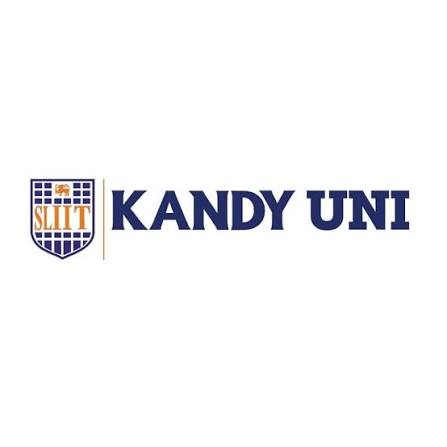

SLIIT KandyUni
Staff Portal

SLIIT KandyUni Staff Portal
🕐
After-Hours Time Reporting
Record and submit after-hours work time. Generate PDF reports and send to HR via Outlook.
Open →
📋
Faculty Board Meeting Manager
Prepare meeting agendas, minutes, and board documents.
Open →
📚
Research Publications
Browse staff journal articles and conference papers via OpenAlex.
Open →